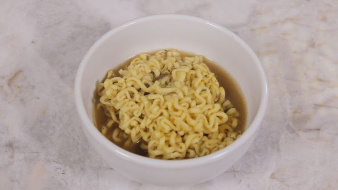

Como fazer miojo


Igredientes
- 1 panela pequena;
- O miojo,
- 20 ml água,
- tempero do miojo,
- Colher para mexer.
Instruções de cozinha
- Despejar o miojo na panela;
- Coloque 20 ml de água;
- Espere 5 minutos para colocar o tempero do miojo
- Depois de 5 minutos coloque o tempeiro que vem com o miojo
| |
Nissi Lámen carne |
| Valor energetico |
390 kcal |
| Proteína |
7,9 g |
| Carboidrato |
54 g |